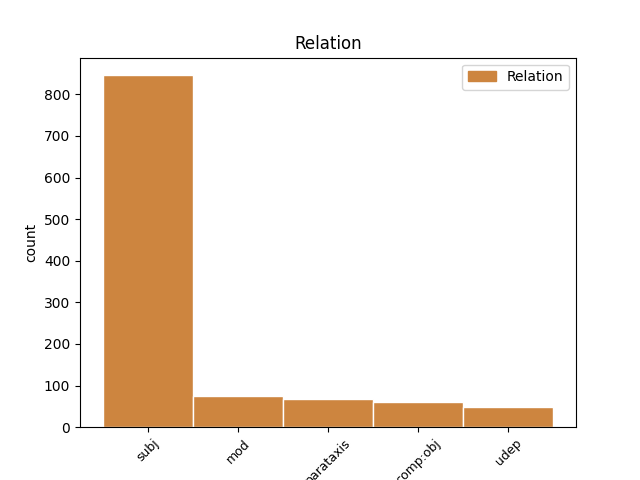
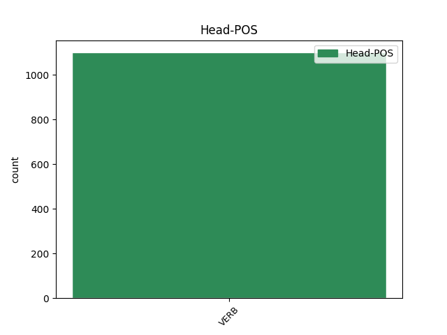
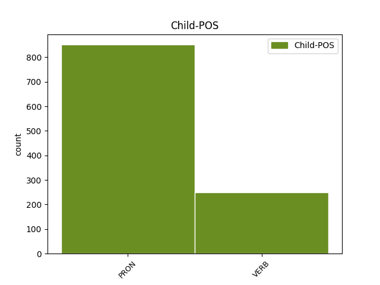

Distribution of features within this leaf



Agreement Rules sorted by frequency.
- When the dependent token is the subject(subj) of the head token, and the head token is VERB and the dependent token is PRON.
1 הוא הוא PRON PRON Gender=Masc|Number=Sing|Person=3|PronType=Prs 2 subj _ _
2 העדיף העדיף VERB VERB Gender=Masc|HebBinyan=HIFIL|Number=Sing|Person=3|Tense=Past|Voice=Act 0 _ _ _
3 את _ _ _ _ 0 _ _ _
4 נאפולי _ _ _ _ 0 _ _ _
5 שם _ _ _ _ 0 _ _ _
6 החליף _ _ _ _ 0 _ _ _
7 את _ _ _ _ 0 _ _ _
8 דיויד _ _ _ _ 0 _ _ _
9 באטלר _ _ _ _ 0 _ _ _
10 ( _ _ _ _ 0 _ _ _
11 בוגר _ _ _ _ 0 _ _ _
12 נוודה _ _ _ _ 0 _ _ _
13 לאס _ _ _ _ 0 _ _ _
14 וגאס _ _ _ _ 0 _ _ _
15 ) _ _ _ _ 0 _ _ _
16 ש _ _ _ _ 0 _ _ _
17 נחתך _ _ _ _ 0 _ _ _
18 . _ _ _ _ 0 _ _ _
1 " _ _ _ _ 0 _ _ _
2 הוא _ _ _ _ 0 _ _ _
3 התמוטט התמוטט VERB VERB Gender=Masc|HebBinyan=HITPAEL|Number=Sing|Person=3|Tense=Past 0 _ _ _
4 על _ _ _ _ 0 _ _ _
5 מכונית _ _ _ _ 0 _ _ _
6 פגו _ _ _ _ 0 _ _ _
7 " _ _ _ _ 0 _ _ _
8 , _ _ _ _ 0 _ _ _
9 סיפר סיפר VERB VERB Gender=Masc|HebBinyan=PIEL|Number=Sing|Person=3|Tense=Past|Voice=Act 3 parataxis _ _
10 אתמול _ _ _ _ 0 _ _ _
11 בס _ _ _ _ 0 _ _ _
12 , _ _ _ _ 0 _ _ _
13 " _ _ _ _ 0 _ _ _
14 השכבתי _ _ _ _ 0 _ _ _
15 את_ _ _ _ _ 0 _ _ _
16 _הוא _ _ _ _ 0 _ _ _
17 על _ _ _ _ 0 _ _ _
18 ה _ _ _ _ 0 _ _ _
19 רצפה _ _ _ _ 0 _ _ _
20 ו _ _ _ _ 0 _ _ _
21 הוצאתי _ _ _ _ 0 _ _ _
22 את _ _ _ _ 0 _ _ _
23 ה _ _ _ _ 0 _ _ _
24 סכין _ _ _ _ 0 _ _ _
25 . _ _ _ _ 0 _ _ _
1 ל_ _ _ _ _ 0 _ _ _
2 _אנחנו _ _ _ _ 0 _ _ _
3 חשוב _ _ _ _ 0 _ _ _
4 ש _ _ _ _ 0 _ _ _
5 הוא _ _ _ _ 0 _ _ _
6 ילמד למד VERB VERB Gender=Masc|Number=Sing|Person=3|Tense=Fut 0 _ _ _
7 איך _ _ _ _ 0 _ _ _
8 כל _ _ _ _ 0 _ _ _
9 זה _ _ _ _ 0 _ _ _
10 התהווה התהווה VERB VERB Gender=Masc|HebBinyan=HITPAEL|Number=Sing|Person=3|Tense=Past 6 mod _ SpaceAfter=No
11 " _ _ _ _ 0 _ _ _
12 . _ _ _ _ 0 _ _ _
1 אמש _ _ _ _ 0 _ _ _
2 ב _ _ _ _ 0 _ _ _
3 אוסישקין _ _ _ _ 0 _ _ _
4 הרגשתי הרגיש VERB VERB Gender=Fem,Masc|HebBinyan=HIFIL|Number=Sing|Person=1|Tense=Past|Voice=Act 0 _ _ _
5 כאילו _ _ _ _ 0 _ _ _
6 חזרנו חזר VERB VERB Gender=Fem,Masc|Number=Plur|Person=1|Tense=Past 4 udep _ _
7 ל _ _ _ _ 0 _ _ _
8 סאברס _ _ _ _ 0 _ _ _
9 . _ _ _ _ 0 _ _ _
1 שלושת _ _ _ _ 0 _ _ _
2 ה _ _ _ _ 0 _ _ _
3 סטודנטים _ _ _ _ 0 _ _ _
4 חתמו _ _ _ _ 0 _ _ _
5 על _ _ _ _ 0 _ _ _
6 ה _ _ _ _ 0 _ _ _
7 הודעה _ _ _ _ 0 _ _ _
8 ב _ _ _ _ 0 _ _ _
9 טביעות _ _ _ _ 0 _ _ _
10 אגודל_ _ _ _ _ 0 _ _ _
11 _של_ _ _ _ _ 0 _ _ _
12 _הם _ _ _ _ 0 _ _ _
13 ה _ _ _ _ 0 _ _ _
14 מדממים _ _ _ _ 0 _ _ _
15 ו _ _ _ _ 0 _ _ _
16 הבהירו _ _ _ _ 0 _ _ _
17 : _ _ _ _ 0 _ _ _
18 " _ _ _ _ 0 _ _ _
19 אם _ _ _ _ 0 _ _ _
20 תקבלו _ _ _ _ 0 _ _ _
21 את _ _ _ _ 0 _ _ _
22 דרישה_ _ _ _ _ 0 _ _ _
23 _של_ _ _ _ _ 0 _ _ _
24 _אנחנו _ _ _ _ 0 _ _ _
25 נסגיר הסגיר VERB VERB Gender=Fem,Masc|HebBinyan=HIFIL|Number=Plur|Person=1|Tense=Fut|Voice=Act 0 _ _ _
26 עצמנו עצמו PRON PRON Gender=Fem,Masc|Number=Plur|Person=1|PronType=Prs|Reflex=Yes 25 comp:obj _ _
27 ב _ _ _ _ 0 _ _ _
28 שלום _ _ _ _ 0 _ _ _
29 ל _ _ _ _ 0 _ _ _
30 שלטונות _ _ _ _ 0 _ _ _
31 הודו _ _ _ _ 0 _ _ _
32 " _ _ _ _ 0 _ _ _
33 . _ _ _ _ 0 _ _ _
1 ה _ _ _ _ 0 _ _ _
2 משטרה _ _ _ _ 0 _ _ _
3 נעזרה _ _ _ _ 0 _ _ _
4 ב _ _ _ _ 0 _ _ _
5 צינורות _ _ _ _ 0 _ _ _
6 מים _ _ _ _ 0 _ _ _
7 , _ _ _ _ 0 _ _ _
8 ב _ _ _ _ 0 _ _ _
9 כלבים _ _ _ _ 0 _ _ _
10 ו _ _ _ _ 0 _ _ _
11 ב _ _ _ _ 0 _ _ _
12 גז _ _ _ _ 0 _ _ _
13 מדמיע _ _ _ _ 0 _ _ _
14 כדי _ _ _ _ 0 _ _ _
15 לפזר _ _ _ _ 0 _ _ _
16 יותר _ _ _ _ 0 _ _ _
17 מ _ _ _ _ 0 _ _ _
18 - _ _ _ _ 0 _ _ _
19 150 _ _ _ _ 0 _ _ _
20 איש _ _ _ _ 0 _ _ _
21 , _ _ _ _ 0 _ _ _
22 רבים רב VERB VERB Gender=Masc|HebBinyan=PAAL|Number=Plur|Person=1,2,3|VerbForm=Part|Voice=Act 25 subj _ _
23 מהם _ _ _ _ 0 _ _ _
24 _הם _ _ _ _ 0 _ _ _
25 עוטי עטה VERB VERB Definite=Cons|Gender=Masc|HebBinyan=PAAL|Number=Plur|Person=1,2,3|VerbForm=Part|Voice=Act 0 _ _ _
26 מסיכות _ _ _ _ 0 _ _ _
27 , _ _ _ _ 0 _ _ _
28 ש _ _ _ _ 0 _ _ _
29 התפרעו _ _ _ _ 0 _ _ _
30 ב _ _ _ _ 0 _ _ _
31 שבת _ _ _ _ 0 _ _ _
32 ב _ _ _ _ 0 _ _ _
33 ה_ _ _ _ _ 0 _ _ _
34 עיר _ _ _ _ 0 _ _ _
35 מאגדבורג _ _ _ _ 0 _ _ _
36 , _ _ _ _ 0 _ _ _
37 סיפר _ _ _ _ 0 _ _ _
38 דובר _ _ _ _ 0 _ _ _
39 ה _ _ _ _ 0 _ _ _
40 משטרה _ _ _ _ 0 _ _ _
41 , _ _ _ _ 0 _ _ _
42 יורגן _ _ _ _ 0 _ _ _
43 ויינר _ _ _ _ 0 _ _ _
44 . _ _ _ _ 0 _ _ _
1 הגיע הגיע VERB VERB Gender=Masc|HebBinyan=HIFIL|Number=Sing|Person=3|Tense=Past|Voice=Act 10 comp:obj _ _
2 ה _ _ _ _ 0 _ _ _
3 זמן _ _ _ _ 0 _ _ _
4 להתגייס _ _ _ _ 0 _ _ _
5 ל _ _ _ _ 0 _ _ _
6 ה_ _ _ _ _ 0 _ _ _
7 צבא _ _ _ _ 0 _ _ _
8 " _ _ _ _ 0 _ _ _
9 , _ _ _ _ 0 _ _ _
10 נאמר נאמר VERB VERB Gender=Masc|HebBinyan=NIFAL|Number=Sing|Person=3|Tense=Past|Voice=Mid 0 _ _ _
11 ב _ _ _ _ 0 _ _ _
12 אחד _ _ _ _ 0 _ _ _
13 ה _ _ _ _ 0 _ _ _
14 שירים _ _ _ _ 0 _ _ _
15 . _ _ _ _ 0 _ _ _
1 חלק _ _ _ _ 0 _ _ _
2 מ _ _ _ _ 0 _ _ _
3 הסדרים _ _ _ _ 0 _ _ _
4 אלה _ _ _ _ 0 _ _ _
5 בוטל בוטל VERB VERB Gender=Masc|HebBinyan=PUAL|Number=Sing|Person=3|Tense=Past|Voice=Pass 0 _ _ _
6 זה זה PRON PRON Gender=Masc|Number=Sing|Person=3 5 mod _ _
7 מ _ _ _ _ 0 _ _ _
8 כבר _ _ _ _ 0 _ _ _
9 , _ _ _ _ 0 _ _ _
10 ל _ _ _ _ 0 _ _ _
11 דוגמה _ _ _ _ 0 _ _ _
12 : _ _ _ _ 0 _ _ _
13 מימון _ _ _ _ 0 _ _ _
14 " _ _ _ _ 0 _ _ _
15 ה _ _ _ _ 0 _ _ _
16 תוכנית _ _ _ _ 0 _ _ _
17 ה _ _ _ _ 0 _ _ _
18 כספית _ _ _ _ 0 _ _ _
19 " _ _ _ _ 0 _ _ _
20 של _ _ _ _ 0 _ _ _
21 חברת _ _ _ _ 0 _ _ _
22 ה _ _ _ _ 0 _ _ _
23 עובדים _ _ _ _ 0 _ _ _
24 ו _ _ _ _ 0 _ _ _
25 תקצוב _ _ _ _ 0 _ _ _
26 קופת _ _ _ _ 0 _ _ _
27 ה _ _ _ _ 0 _ _ _
28 חולים _ _ _ _ 0 _ _ _
29 ה _ _ _ _ 0 _ _ _
30 הסתדרותית _ _ _ _ 0 _ _ _
31 . _ _ _ _ 0 _ _ _
1 ה _ _ _ _ 0 _ _ _
2 תסריט _ _ _ _ 0 _ _ _
3 נכתב נכתב VERB VERB Gender=Masc|HebBinyan=NIFAL|Number=Sing|Person=3|Tense=Past|Voice=Mid 0 _ _ _
4 גם _ _ _ _ 0 _ _ _
5 הוא הוא PRON PRON Gender=Masc|Number=Sing|Person=3|PronType=Prs 3 parataxis _ _
6 במיוחד _ _ _ _ 0 _ _ _
7 לכבוד _ _ _ _ 0 _ _ _
8 ה _ _ _ _ 0 _ _ _
9 מבקרים _ _ _ _ 0 _ _ _
10 ב _ _ _ _ 0 _ _ _
11 אולפני _ _ _ _ 0 _ _ _
12 יוניוורסל _ _ _ _ 0 _ _ _
13 . _ _ _ _ 0 _ _ _
Disagree Examples:
1 מ _ _ _ _ 0 _ _ _
2 ה _ _ _ _ 0 _ _ _
3 קהל _ _ _ _ 0 _ _ _
4 נשמעו נשמע VERB VERB Gender=Fem,Masc|HebBinyan=NIFAL|Number=Plur|Person=3|Tense=Past|Voice=Mid 0 _ _ _
5 קריאות _ _ _ _ 0 _ _ _
6 : _ _ _ _ 0 _ _ _
7 אחרי _ _ _ _ 0 _ _ _
8 ה _ _ _ _ 0 _ _ _
9 הלווייה _ _ _ _ 0 _ _ _
10 נלך הלך VERB VERB Gender=Fem,Masc|HebBinyan=PAAL|Number=Plur|Person=1|Tense=Fut|Voice=Act 4 parataxis _ _
11 לשחרר _ _ _ _ 0 _ _ _
12 את _ _ _ _ 0 _ _ _
13 הר _ _ _ _ 0 _ _ _
14 ה _ _ _ _ 0 _ _ _
15 בית _ _ _ _ 0 _ _ _
16 . _ _ _ _ 0 _ _ _
1 גם _ _ _ _ 0 _ _ _
2 יהודים _ _ _ _ 0 _ _ _
3 נמצאים נמצא VERB VERB Gender=Masc|HebBinyan=NIFAL|Number=Plur|Person=1,2,3|VerbForm=Part|Voice=Mid 9 udep _ _
4 עתה _ _ _ _ 0 _ _ _
5 על _ _ _ _ 0 _ _ _
6 ה _ _ _ _ 0 _ _ _
7 כוונת _ _ _ _ 0 _ _ _
8 " _ _ _ _ 0 _ _ _
9 אמרו אמר VERB VERB Gender=Fem,Masc|HebBinyan=PAAL|Number=Plur|Person=3|Tense=Past|Voice=Act 0 _ _ _
10 אנשי _ _ _ _ 0 _ _ _
11 כך _ _ _ _ 0 _ _ _
12 ב _ _ _ _ 0 _ _ _
13 עת _ _ _ _ 0 _ _ _
14 מסע _ _ _ _ 0 _ _ _
15 ה _ _ _ _ 0 _ _ _
16 הלווייה _ _ _ _ 0 _ _ _
17 . _ _ _ _ 0 _ _ _
1 סופר _ _ _ _ 0 _ _ _
2 " _ _ _ _ 0 _ _ _
3 ה _ _ _ _ 0 _ _ _
4 ארץ _ _ _ _ 0 _ _ _
5 " _ _ _ _ 0 _ _ _
6 ב _ _ _ _ 0 _ _ _
7 ה_ _ _ _ _ 0 _ _ _
8 צפון _ _ _ _ 0 _ _ _
9 , _ _ _ _ 0 _ _ _
10 מוסיף הוסיף VERB VERB Gender=Masc|HebBinyan=HIFIL|Number=Sing|Person=1,2,3|VerbForm=Part|Voice=Act 0 _ _ _
11 : _ _ _ _ 0 _ _ _
12 יריות _ _ _ _ 0 _ _ _
13 נשמעו נשמע VERB VERB Gender=Fem,Masc|HebBinyan=NIFAL|Number=Plur|Person=3|Tense=Past|Voice=Mid 10 comp:obj _ _
14 אתמול _ _ _ _ 0 _ _ _
15 ב _ _ _ _ 0 _ _ _
16 שעה _ _ _ _ 0 _ _ _
17 2000 _ _ _ _ 0 _ _ _
18 ב _ _ _ _ 0 _ _ _
19 ה_ _ _ _ _ 0 _ _ _
20 ערב _ _ _ _ 0 _ _ _
21 ב _ _ _ _ 0 _ _ _
22 שפרעם _ _ _ _ 0 _ _ _
23 , _ _ _ _ 0 _ _ _
24 סמוך _ _ _ _ 0 _ _ _
25 ל _ _ _ _ 0 _ _ _
26 בית_ _ _ _ _ 0 _ _ _
27 _של_ _ _ _ _ 0 _ _ _
28 _הוא _ _ _ _ 0 _ _ _
29 של _ _ _ _ 0 _ _ _
30 ראש _ _ _ _ 0 _ _ _
31 ה _ _ _ _ 0 _ _ _
32 עירייה _ _ _ _ 0 _ _ _
33 , _ _ _ _ 0 _ _ _
34 איברהים _ _ _ _ 0 _ _ _
35 נימר _ _ _ _ 0 _ _ _
36 חוסיין _ _ _ _ 0 _ _ _
37 . _ _ _ _ 0 _ _ _
1 ב _ _ _ _ 0 _ _ _
2 ה_ _ _ _ _ 0 _ _ _
3 יציאות _ _ _ _ 0 _ _ _
4 מ _ _ _ _ 0 _ _ _
5 שפרעם _ _ _ _ 0 _ _ _
6 הוצבו _ _ _ _ 0 _ _ _
7 מחסומים _ _ _ _ 0 _ _ _
8 , _ _ _ _ 0 _ _ _
9 לאחר _ _ _ _ 0 _ _ _
10 ש _ _ _ _ 0 _ _ _
11 תושבים _ _ _ _ 0 _ _ _
12 סיפרו _ _ _ _ 0 _ _ _
13 כי _ _ _ _ 0 _ _ _
14 הבחינו _ _ _ _ 0 _ _ _
15 ב _ _ _ _ 0 _ _ _
16 מכונית _ _ _ _ 0 _ _ _
17 אדומה _ _ _ _ 0 _ _ _
18 מ _ _ _ _ 0 _ _ _
19 סוג _ _ _ _ 0 _ _ _
20 " _ _ _ _ 0 _ _ _
21 סובארו _ _ _ _ 0 _ _ _
22 " _ _ _ _ 0 _ _ _
23 , _ _ _ _ 0 _ _ _
24 נושאת _ _ _ _ 0 _ _ _
25 לוחיות _ _ _ _ 0 _ _ _
26 זיהוי _ _ _ _ 0 _ _ _
27 ישראליות _ _ _ _ 0 _ _ _
28 , _ _ _ _ 0 _ _ _
29 ש _ _ _ _ 0 _ _ _
30 נראתה נראה VERB VERB Gender=Fem|HebBinyan=NIFAL|Number=Sing|Person=3|Tense=Past|Voice=Mid 0 _ _ _
31 נמלטת נמלט VERB VERB Gender=Fem|HebBinyan=NIFAL|Number=Sing|Person=1,2,3|VerbForm=Part|Voice=Mid 30 mod _ _
32 מ _ _ _ _ 0 _ _ _
33 ה _ _ _ _ 0 _ _ _
34 מקום _ _ _ _ 0 _ _ _
35 . _ _ _ _ 0 _ _ _
1 מקורות _ _ _ _ 0 _ _ _
2 פלשתיניים _ _ _ _ 0 _ _ _
3 טענו _ _ _ _ 0 _ _ _
4 כי _ _ _ _ 0 _ _ _
5 ב _ _ _ _ 0 _ _ _
6 סוף _ _ _ _ 0 _ _ _
7 ה _ _ _ _ 0 _ _ _
8 שבוע _ _ _ _ 0 _ _ _
9 הוכו הוכה VERB VERB Gender=Fem,Masc|HebBinyan=HUFAL|Number=Plur|Person=3|Tense=Past|Voice=Pass 0 _ _ _
10 ב _ _ _ _ 0 _ _ _
11 מרכז _ _ _ _ 0 _ _ _
12 שכם _ _ _ _ 0 _ _ _
13 01 _ _ _ _ 0 _ _ _
14 תושבים _ _ _ _ 0 _ _ _
15 מקומיים _ _ _ _ 0 _ _ _
16 בידי _ _ _ _ 0 _ _ _
17 חיילי _ _ _ _ 0 _ _ _
18 צה"ל _ _ _ _ 0 _ _ _
19 , _ _ _ _ 0 _ _ _
20 סמוך סמך VERB VERB Gender=Masc|Number=Sing|Person=1,2,3|VerbForm=Part 9 mod _ _
21 ל _ _ _ _ 0 _ _ _
22 שוק _ _ _ _ 0 _ _ _
23 ה _ _ _ _ 0 _ _ _
24 ירקות _ _ _ _ 0 _ _ _
25 . _ _ _ _ 0 _ _ _